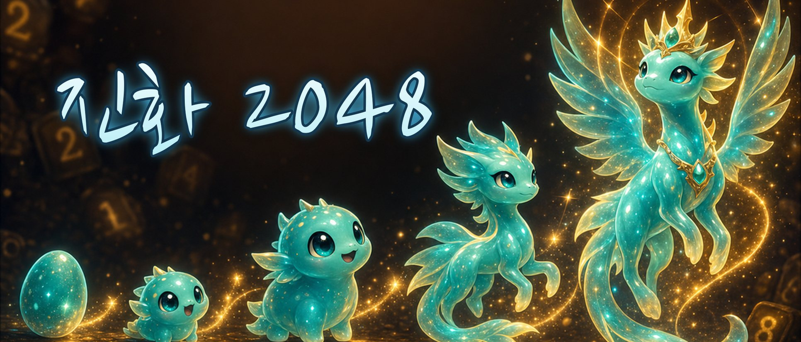

MERGE · EVOLVE · COLLECT
합칠수록 자라는
동물 2048.
진화 2048은 익숙한 2048 규칙에 동물 진화를 더한 퍼즐 게임입니다. 같은 타일을 합치면 동물이 알에서 전설까지 11단계로 자라요.
무료 · Google Play · 앱인토스

한 판의 흐름
밀고, 합치고, 도감을 채워요.
규칙은 2048 그대로예요. 숫자 대신 동물이 자라는 모습을 보며 한 판씩 즐겨 보세요.
-
스와이프로 합치기
상하좌우로 밀어 같은 타일을 합쳐요. 합쳐진 타일의 값만큼 점수가 올라가요.
-
알에서 전설까지
판마다 동물이 무작위로 정해지고, 타일을 합칠수록 알·아기·성체를 거쳐 전설까지 11단계로 자라요.
-
도감에 남기기
동물마다 어디까지 키웠는지 도감에 기록돼요. 전설까지 키우면 카드에 완성 표시가 붙어요.
가입 없이 바로
기록은 내 기기에,
판은 언제든 이어서.
회원가입 없이 바로 시작합니다. 최고 점수, 도감 진행도, 진행 중인 판은 기기 안에 저장되며 따로 서버에 보내지 않아요. 앱을 껐다 켜도 「이어하기」로 하던 판을 그대로 이어 할 수 있습니다.
Google Play 버전은 인터넷 연결 없이도 모든 기능이 동작합니다. 앱인토스 버전은 토스 게임 로그인과 리더보드, 광고를 위해 인터넷을 씁니다.
- 분류
- 게임 · 퍼즐 게임
- 출시 채널
- Google Play · 앱인토스
개인정보처리방침과 이용약관은 앱이 출시된 스토어의 앱 정보와 앱 안에서 확인할 수 있습니다.
궁금할 때 먼저 보기
자주 묻는 질문
무료인가요?
네, 무료입니다. 유료 상품이나 인앱결제는 없습니다.
막히면 어떻게 하나요?
화면 아래 도움 아이템 4가지(한 칸·가로줄·세로줄·같은 수 지우기)로 판을 정리할 수 있어요. 아이템마다 판당 무료 1번, 추가로 2번 더 쓸 수 있고, 앱인토스에서는 추가 사용 때 짧은 보상형 광고를 봅니다.
2048을 만들면 끝나나요?
아니요. 2048(전설)을 만들어도 판은 계속됩니다. 빈 칸이 없고 더 합칠 타일도 없을 때 게임이 끝나요. 되돌리기와 이어 살리기 기능은 없습니다.
랭킹이 있나요?
앱인토스에서는 최고 점수를 경신하면 토스 게임센터 리더보드에 올라가고, 메인 화면에서 리더보드를 볼 수 있어요. Google Play 버전에는 리더보드가 없습니다.
어떤 기기에서 할 수 있나요?
Google Play(Android 6.0 이상)와 토스 앱 안의 앱인토스에서 할 수 있어요. 화면은 세로 방향이며, 한국어로 제공됩니다.
기록은 어디에 저장되나요? 권한이 필요한가요?
점수와 도감 기록은 기기 안에만 저장돼요. 앱 데이터를 지우거나 앱을 삭제하면 기록도 함께 사라집니다. Google Play 버전은 따로 요청하는 권한이 없습니다.
도움이 필요할 때
문의 안내
앱 이용에 관한 궁금한 점이나 도움이 필요한 내용을 이메일로 보내 주세요.